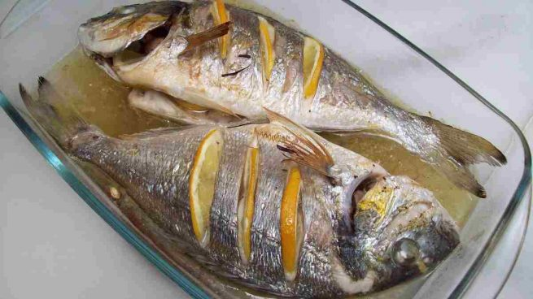

Pescados
La zona cantabrica tiene la suerte de contar con una tradición pesquera muy arraigada
de la que luego en tierra se sacaba gran provecho con elaboraciones culinarias que han llegado hasta
nuestros días. En cocina como tu abuela daremos un pequeño repaso a algunas de estas recetas de antaño.
 El Txitxarro a la Donostiarra, las anchoas fritas
rellenas de pimiento del piquillo y los chipirones en su tinta
son algunas de las recetas que encontraras en la web.
Estas y otras muchas recetas estarán dispoinibles en la web proximamente y recuerda
cocinar como tu abuela no es una misión imposible.
Tiempos modernos, recetas viejunas.
Para acceder a todas las recetas de la categoría pescados pincha aquí.
Fuente foto: Ok diario